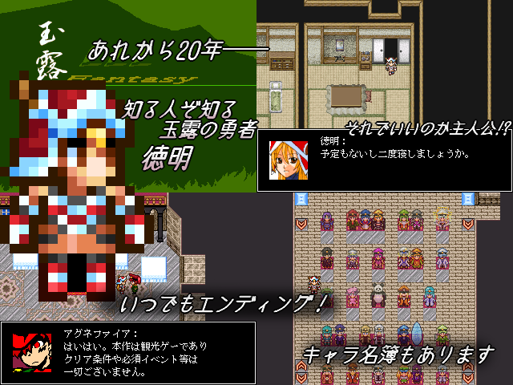

| No.36 玉露20thアニバーサリー!!! | |
|
 | |
| 作成ツクール：RPGツクール2000 | |
| ジャンル：観光ゲー | |
| 作者名：東 | |
| ＜配信/動画投稿/翻訳＞可 | |
＜作者のコメント＞玉露にあの女が帰ってくる―― 2026年1月5日は玉露リレー20周年！ 玉露軍も気づけば40人超えの大所帯に！ 久しぶりの方も初めましての方も、おいでませホワイトハウス！ ・あらすじ 玉露ファンタジーに登場する女勇者、徳明。 三将軍らが改心してからは故郷で隠居生活を送っていたが…？ 三将軍が20年かけて積み上げてきたもの。 死の支配者が20年前に成せなかったこと。 その成果である玉露軍と追加将軍たちの姿に、 かつての勇者は何を見るか。 かつての魔王は20年目の邂逅に何を思う？ ・ゲームの主旨 クリア条件なし、ED一種（特定キャラの面識有無で差分あり）。 好きなタイミングでエンディングに入れます。 記念パーティーが開かれる時間まで、そして徳明が三将軍に解放される時まで ホワイトハウス内部を徘徊して暇を潰しましょう。 やれることは様々 ・玉露将軍（サイバイ～アスタビロード、サルファレイまで）と 将軍ではない数名、計38名との顔合わせ ・死の支配者とのラブラブデート ・三将軍の内一人とのラブラブデート ・↑四人の評判チェック etc... もちろん何もしない自由もあるのです。 1/5提出を目指してますが無理そう 提出はします | |
管理人から 一番最初の玉露リレーから最新の新キャラまで振り返るだって！？玉露将軍を知りつくすためのファンゲームのベスト盤になりそうな一本だ！ 一番最初の玉露リレーから最新の新キャラまで振り返るだって！？玉露将軍を知りつくすためのファンゲームのベスト盤になりそうな一本だ！ |
|
| ダウンロード(2.4mb:2/2更新) 感想掲示板 | |
| 前の作品 次の作品 / TOPへ戻る | |